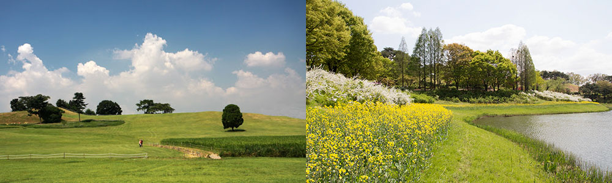
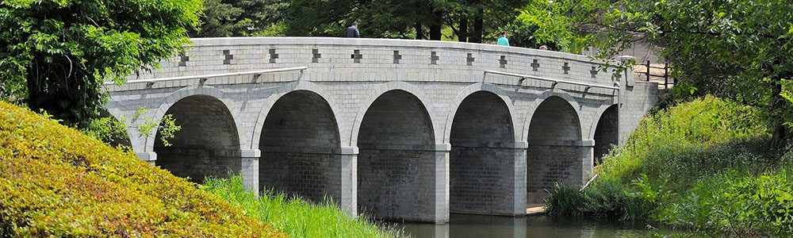
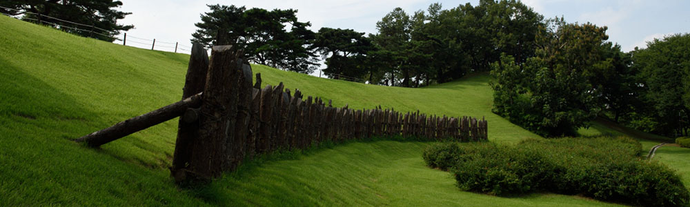
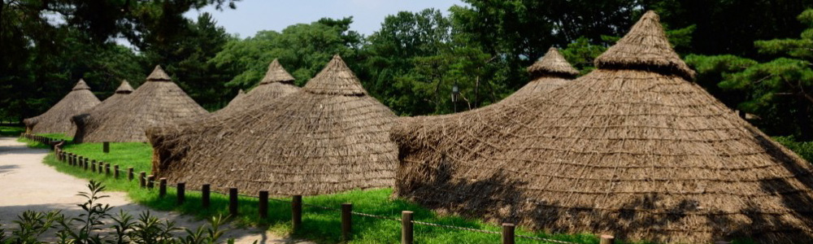

몽촌역사이야기
21세기 서울에서 만나는 백제로의 여행
-
몽촌토성
- 
-
이 성은 오래전부터 한성백제시대의 토성으로 전하여 왔을 뿐, 그 정확한 내용을 모르고 있었다. 1980년대에 들면서 주변 일대가 88서울올림픽 체육시설 건립지로서 확정됨에 따라 이 성의 성격파악과 아울러 유적공원으로 복원키로 결정하고, 고증자료를 얻기 위해 서울대학교 박물관에서 1983~1988년까지 5차에 걸쳐 발굴조사를 실시했다. 그 결과 얻어진 자료를 토대로 현재의 모습으로 복원 정비가 이루어지게 되었다.
이 토성은 한강지류의 자연 지형을 이용하여 진흙을 쌓아 성벽을 만들었고, 특히 북벽의 단을 이룬 곳에서는 나무울타리를 세웠으며, 그 외곽에는 해자가 둘러져 있었음이 확인되었다. 이 성은 북쪽방향으로 부터의 침공에 대비한 방어용 성의 성격을 많이 띠고 있는 한성 백제시대의 토성으로 밝혀졌다. 성 내부에서는 움집터, 독무덤, 저장 구덩이 등 유구와 함께 백제토기를 비롯하여 무기, 낚싯바늘, 돌절구 등 각종 유물이 출토되어 한성백제시대 연구에 귀중한 자료를 얻게 되었다.
-
곰말다리
- 
-
이 다리는 원래 몽촌교로 불리워졌으며 몽촌은 우리말로 '꿈마을'이다. '곰말'은 꿈마을의 옛말로 1986년 3월 서울시 지명위원회에서 교각 명칭 제정시 순수하고 아름다운 우리말을 복구하기 위하여 '곰말다리'라 부르기로 하였다.
-
몽촌토성목책
- 
-
우리나라의 목책은 초기 철기시대로부터 조선시대에 이르기까지 오랜기간에 걸쳐 적을 방어하는 수단으로 쓰여졌다. 목책은 단순히 목책만으로 설치한 목책성이 있고 몽촌토성과 같이 토성벽 위에 목책을 설치한 성이 있다.
몽촌토성의 목책은 1983~1988년 서울대학교 박물관에서 발굴조사한 결과 목책의 자리가 확인되었는데 생토 암반층에 1.8m간격으로 직경 30~40cm, 길이 30~90cm의 구멍을 파고 큰나무를 막아 기둥을 세우고 기둥과 기둥사이에 보조기둥을 세웠던 것이다. 목책의 높이는 정확히 알 수 없으나 2m 이상으로 추정된다. 이 목책은 발굴조사된 원래의 목책기둥 자리를 따라 그 위에 추정복원한 것이다.
-
움집터
- 
-
모두 여섯 차례에 걸쳐 정밀 발굴조사를 실시한 결과, 4채의 지상 건물터 및 12개의 움집터가 드러났다. 이 움집들은 해발 25m가 넘는 높은 지대에 위치하고 있다. 이들은 평면형태와 깊이에 따라 3가지 형식으로 나뉘어진다. 첫번째는, 구릉상의 경사면을 L자 형태로 파서 만든 것이고, 이것이 숫적으로 가장 많다. 두번째는, 수혈의 평면형태가 장방형 모양을 하고 있는 것이며, 당시의 지면으로부터는 1m 정도 파서 만든 것인데, 이런 형태의 움집내에서는 주로 말뼈나 철제 무기류가 출토되어, 일반 살림집이 아니라 군사와 관련된 특수한 용도로 사용하였던 것으로 생각된다. 세번째 형태의 움집은 평면 육각형의 건물지로, 육각형의 짧은 변이 만나는 지점(동남쪽)에 출입시설을 만들고 있다.
긴벽의 길이는 6m, 짧은 벽은 4m 가량된다. 긴 벽에는 기둥구멍이 10개씩 배치되어 있는데 각 기둥구멍의 간격은 50cm 내외이다. 또, 짧은 벽에도 4~5개의 기둥구멍이 배치되어 있으며, 기둥구멍의 크기는 20~30cm 가량이 일반적이나 모서리의 경우에는 무게를 많이 받기 때문에 더 커지는 경향이 있다. 움집내부에는 별도의 시설은 보이지 않으나, 움집 북동쪽 모서리에서 온돌모양의 화덕시설이 드러난 것이 있다. 이곳에 전시되어 있는 4개의 움집터 중에서, 1호는 평면이 장방형인 두번째의 형식이나, 이것이 폐기된 후 2호 주거지가 축조됨으로 인해서 많은 부분이 깎여 나간 상태이다. 3,4호 주거지는 전형적인 육각형 모양의 주거지로 역시 3호 주거지가 폐기된 후 동쪽으로 약간 이동하여 4호 주거지를 축조하였다.